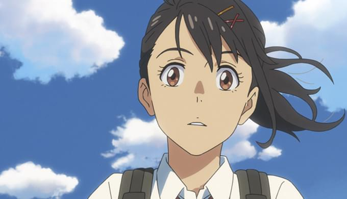
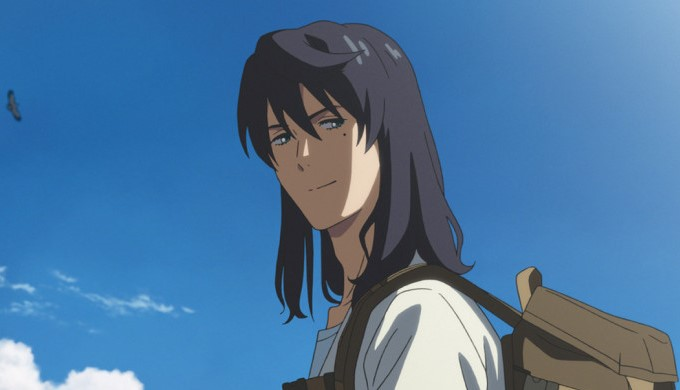
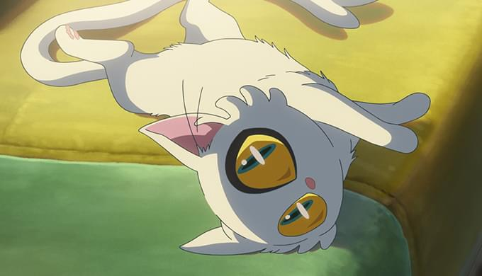
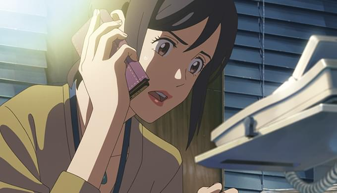
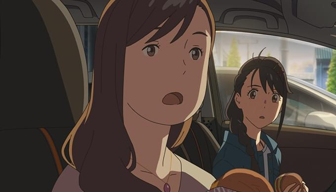
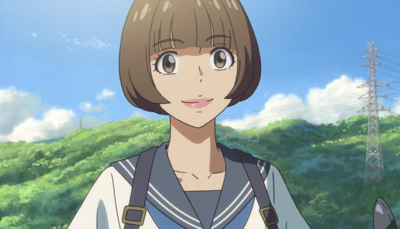
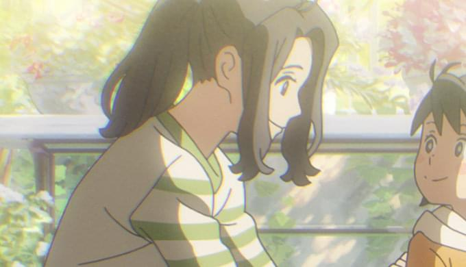
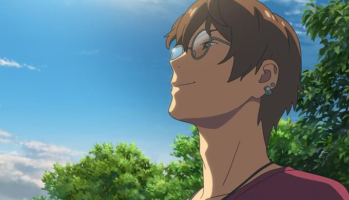
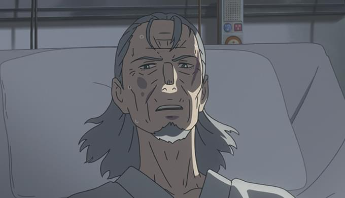

主要な登場キャラクター一覧
CHARACTER & CAST
岩戸 鈴芽cv原菜乃華
九州の静かな港町に暮らしている、17歳の女子高生。
広大な廃墟の中、幼い自分が草原を さまよい歩く不思議な夢をよく見る。

宗像 草太cv松村北斗
”災い”をもたらす扉を閉める「閉じ師」の青年。
扉を探す旅の途中ですずめと出会うが、 ある出来事をきっかけに、
すずめの椅子に姿を変えられてしまう。

ダイジンcv山根あん
すずめの前に突如現れた、人の言葉を話す謎の白い猫。
扉が開く場所に出没し、すずめたちを翻弄する。

岩戸 環 cv深津絵里
漁協で働くすずめの叔母。
すずめが幼い頃から二人で暮らしその成長を見守るが、
過保護なあまりつい口うるさくなってしまう一面も。
岡部 稔 cv染谷将太
すずめの地元の漁協に勤めている環の同僚。 環に片想いしている。

二ノ宮 ルミ cv伊藤沙莉
女手一つで幼い双子を育てる、神戸のスナックのママ。
ヒッチハイクをしていたすずめを拾う

海部 千果 cv花瀬琴音
岩戸鈴芽が「戸締まりの旅」の途中で出会う、愛媛県に暮らす快活な少女。
明るい見た目に違わない元気さを振りまいている。

岩戸 椿芽 cv花澤香菜
岩戸鈴芽が幼いころに一緒に暮らしていた、彼女の母親。
また、九州の宮崎県で暮らしている岩戸環の6つ上の姉でもある。

芹澤 朋也 cv神木隆之介
東京都内にある大学の教育学部に通う大学生で、
「閉じ師」の青年である宗像草太の友人。

宗像 羊朗 cv松本白鸚
宗像草太の祖父で、
彼に「閉じ師」の使命を授けた師匠でもある。
2022©︎すずめの戸締り制作委員会
TH / CG12D203 / 07 / 金子桃花